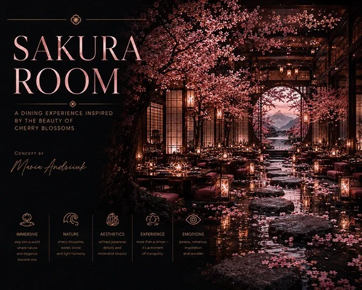
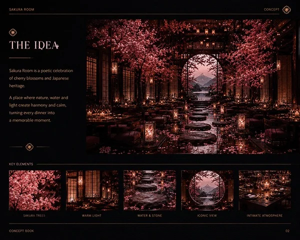
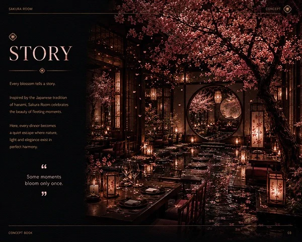
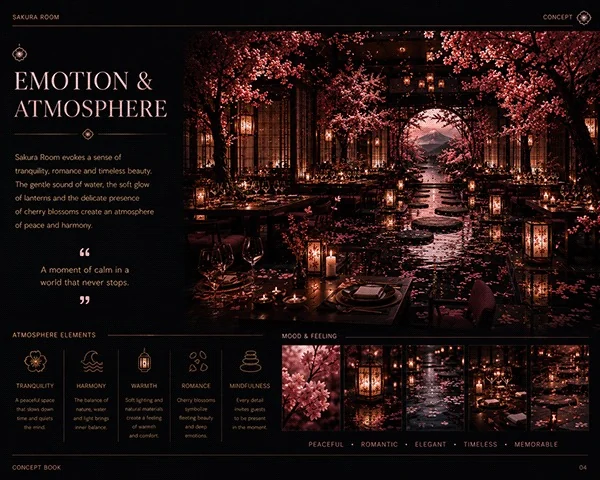
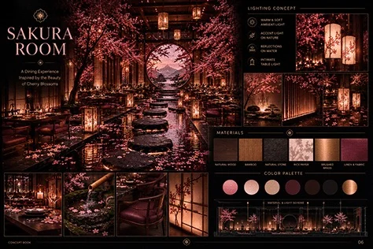
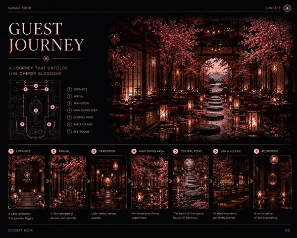

Restaurant concept
Sakura Room
An intimate world beneath the blossoms.

Sakura Room imagines dining beneath a canopy of cherry blossoms. Inspired by hanami, the Japanese tradition of appreciating flowers, the concept combines dark timber, lantern light, reflective water and pink blossoms. Framed openings and intimate tables lead towards a circular focal view. Stone and water create a quiet visual rhythm, while warm lighting brings a sense of closeness to the larger dining room. The presentation explores its story, atmosphere and guest journey.
Material direction
Dark timber; natural stone; bamboo accents; warm metallic details; linen upholstery; reflective water; decorative cherry blossom installations.
My role
Concept design, creative direction and visual storytelling — Maria Andriiuk.
Concept & atmosphere
A dining experience shaped by the fleeting beauty of blossoms. Contrasts between soft flowers, dark timber and quiet water support a romantic, contemplative atmosphere.
Signature elements
A blossom canopy; dark timber architecture; warm lanterns; circular framed openings; reflective water; stone pathways; intimate table settings.
Lighting direction
Lanterns define tables and thresholds. Concealed lighting reveals timber and planting, while reflections extend the glow across the water and emphasise the overhead blossoms.
Experience & journey
The concept journey moves from entrance and arrival through a quieter transition to the main dining area, central pond and bar. The journey board communicates a sequence of experiences rather than a measured floor plan.
Scope of work
Core concept and narrative; spatial atmosphere; material and colour direction; lighting mood; experience sequence; concept views and presentation.

Concept overviewOpen full size ↗
Concept ideaOpen full size ↗
Story — inspired by hanamiOpen full size ↗
Emotion & atmosphereOpen full size ↗
Materials & lighting directionOpen full size ↗
Guest journey — conceptual sequenceOpen full size ↗